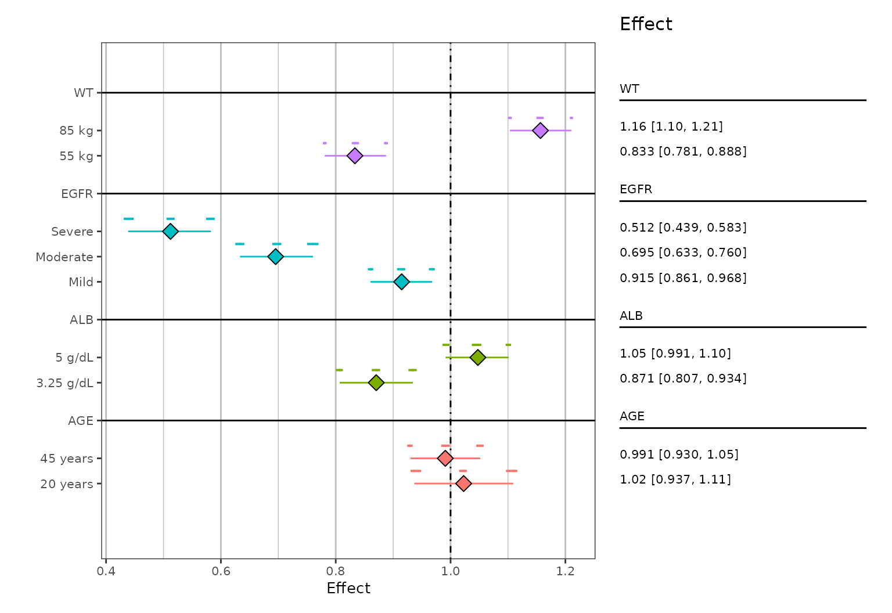
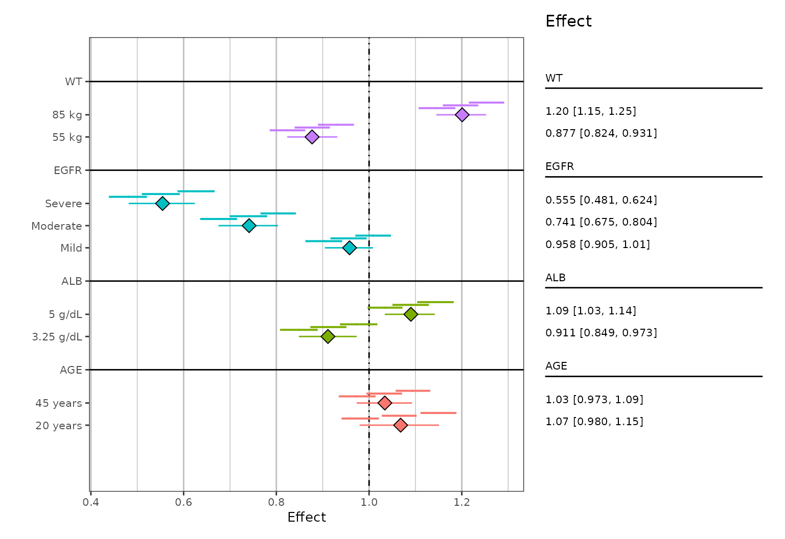

multiple-simulations.RmdIn some instances, it may be useful to present the variability of each summary statistic (i.e. median, 5th and 95th percentile). In order to accomplish this you must have a column denoting the replicate/simulation number. This column is then passed to the replicate argument. An example dataset comes with the package:
rawData <- readRDS(system.file(file.path("test-data", "plotDataEXP.RDS"), package = "pmforest"))
rawData %>%
select(nsim, stat, GROUP, LVL) %>%
head()
#> # A tibble: 6 × 4
#> nsim stat GROUP LVL
#> <int> <dbl> <chr> <chr>
#> 1 1 0.990 AGE 20 years
#> 2 1 1.07 AGE 20 years
#> 3 1 1.07 AGE 20 years
#> 4 1 1.01 AGE 20 years
#> 5 1 1.08 AGE 20 years
#> 6 1 1.06 AGE 20 yearsIn this example, nsim is the “replicate” identifier, while stat is the “value”, GROUP is the “group” column, and LVL will be “group_level”. Notice in our example we have 50 replicates and 1,800 rows for each replicate.
count(rawData, nsim)
#> # A tibble: 50 × 2
#> nsim n
#> <int> <int>
#> 1 1 1800
#> 2 2 1800
#> 3 3 1800
#> 4 4 1800
#> 5 5 1800
#> 6 6 1800
#> 7 7 1800
#> 8 8 1800
#> 9 9 1800
#> 10 10 1800
#> # … with 40 more rowsWhen summarizing the data, users will have to specify the replicate column. This will output the same data structure described in the “Summarize data” section of the “Getting Started” vignette, however it will now have nine numeric columns instead of three.
sumData <-
summarize_data(
rawData,
value = stat,
group = GROUP,
group_level = LVL,
replicate = nsim
)
head(sumData)
#> # A tibble: 6 × 11
#> group group_level mid_mid mid_lo mid_hi lo_mid lo_lo lo_hi hi_mid hi_lo hi_hi
#> <chr> <chr> <dbl> <dbl> <dbl> <dbl> <dbl> <dbl> <dbl> <dbl> <dbl>
#> 1 AGE 20 years 1.02 1.01 1.03 0.937 0.930 0.949 1.11 1.10 1.12
#> 2 AGE 45 years 0.991 0.984 0.999 0.930 0.924 0.934 1.05 1.04 1.06
#> 3 ALB 3.25 g/dL 0.871 0.863 0.877 0.807 0.800 0.812 0.934 0.927 0.941
#> 4 ALB 5 g/dL 1.05 1.04 1.05 0.991 0.986 0.998 1.10 1.10 1.11
#> 5 EGFR Mild 0.915 0.907 0.921 0.861 0.856 0.865 0.968 0.962 0.973
#> 6 EGFR Moderate 0.695 0.690 0.705 0.633 0.625 0.641 0.760 0.750 0.770These nine columns (mid_mid, mid_lo, mid_hi, plus three more each for lo_* and hi_*) contain the summarized values. In this case, the mid_mid, lo_mid, and hi_mid columns correspond to the values of the major interval (i.e. the big lines and central data point on the plots we are about to create) and the *_lo and *_hi columns correspond to the values for each of the three minor intervals (i.e. the small lines on the plots).
Users can also use the arguments rep_statistic (options are “median”, “mean”, or “geo_mean”, defaulting to “median”), and the rep_probs (defaulting to c(0.025, 0.975)) to control how the minor intervals are calculated.
As before, plot_forest() will assume the grouping column names shown above, and will throw an error if they are renamed to anything else.
You can now pass this data directly to pmforest::plot_forest(). The function will recognize the additional columns and automatically draw the minor intervals.
Note: these plots can be customized and labelled as shown in the “Getting Started” vignette, but for clarity and simplicity, we just show the basic forest plots below.
plot_forest(sumData, vline_intercept = 1)
In cases where the additional confidence intervals overlap, you can vertically jitter them via the jitter_reps argument (logical). An example can be seen below (note that the data is different than above):
system.file(file.path("test-data", "plotDataEXP.RDS"), package = "pmforest") %>%
readRDS() %>%
mutate(stat = stat + (nsim/600)) %>% # making variability larger to demonstrate jitter
summarize_data(
value = stat,
group = GROUP,
group_level = LVL,
replicate = nsim
) %>%
plot_forest(
jitter_reps = TRUE,
vline_intercept = 1
)